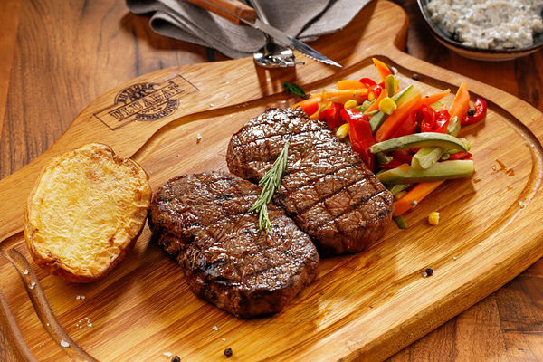

Lokum Bonfile

Ana Malzemeler
- dana bonfile
- 400 gram (g)
- 1 tatlı kaşığı maldon tuz
- 1 tatlı kaşığı Karabiber
Kekikli Tereyağı
- 3 yemek kaşığı tereyağı
- 4 dal taze kekik yaprağı
Baharatlı Patates
- 3 adet elma dilimi şeklinde doğranmış patates
- 2 yemek kaşığı zeytinyağı
- 4 yemek kaşığı rendelenmiş parmesan peyniri
- yarım tatlı kaşığı tuz
- 1 tatlı kaşığı sarımsak tozu
- 1 tatlı kaşığı taze kekik
- 1 tatlı kaşığı kırmızı toz biber
- Yarım tatlı kaşığı Karabiber
Şefin Önerisi:
- İyi bir lokum bonfile pişirmenin en önemli püf noktası, etin iyi seçilmiş olmasıdır. Her zaman tercih ettiğiniz ve güvendiğiniz kasabınızdan, taze bir et satın alın.
- Eğer var ise demir döküm tavada pişirin. Etiniz çok daha lezzetli olacaktır.
- Etleri pişirirken kızgın tavada mühürlemeye ve fazla pişirip kurutmamaya özen gösterin. Eğer iyi pişmiş bir et seviyorsanız mühürleme işleminden sonra önceden ısıtılmış 180 derece fırında, üzerini pişirme kağıdı ile kapatarak 10 dakika kadar daha pişirin. Böylelikle etiniz kurumayacak ve içi iyi pişecektir.
Buraya tıklayarak yapılış videosunu izleyebilirsiniz...